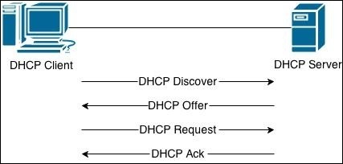

DHCP Spoofing (Router)
DHCP(Application layer 7) is a service usually running on
routers to dynamically assign or revoke IP address to new hosts on the network.
All the packets exchanged between client and server
are sent in broadcast, thus everyone in the network receives the DHCP packets,
even the hosts not involved in the communication!How take advantage(exploit) from this DHCP protocol behaviour?
How we have seen in the DHCP chapter, if there are more than one DHCP Server that make a
DHCP Offer will win the DHCP server that offer a greater Lease Time.
So what we have to do is act as a DHCP server and send a greater
Lease Time(>3600 seconds). This will lure the victim to choose our offer and then set the configurations we will send.
DHCP Servers not only offer IP addresses but they can also provide a default gateway for the network. By competing with legit DHCP servers (and winning by increasing the lease time),
we can set ourselves as the default gatewayIn this way all the traffic leaving the network from the client host will reach our machine (attacker) and then the real gateway of the network